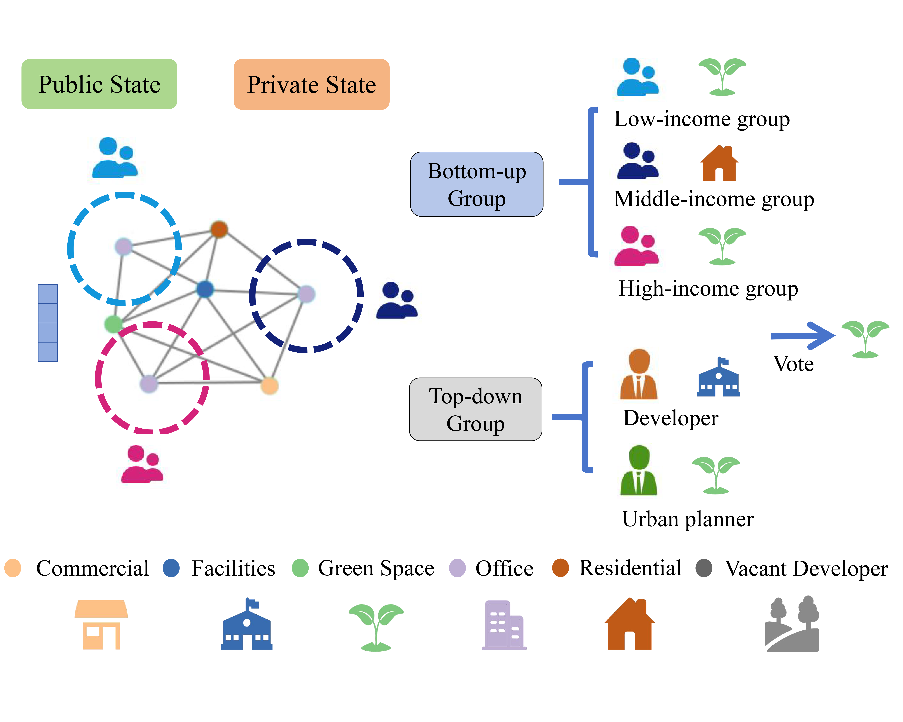
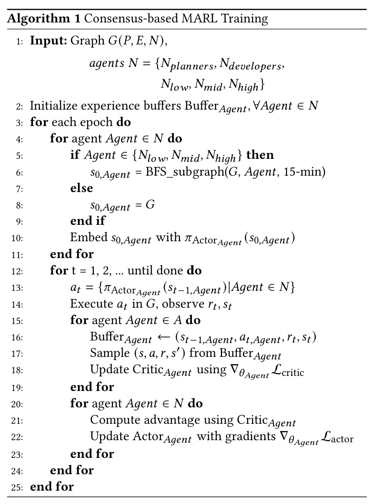

AI Agent as Urban Planner: Steering Stakeholder Dynamics in Urban Planning via Consensus-based Multi-Agent Reinforcement Learning

Abstract
In urban planning, land use readjustment plays a pivotal role in aligning land use configurations with the current demands for sustainable urban development. However, present-day urban planning practices face two main issues. Firstly, land use decisions are predominantly dependent on human experts. Besides, while resident engagement in urban planning can promote urban sustainability and livability, it is challenging to reconcile the diverse interests of stakeholders. To address these challenges, we introduce a Consensus-based Multi-Agent Reinforcement Learning framework for real-world land use readjustment. This framework serves participatory urban planning, allowing diverse intelligent agents as stakeholder representatives to vote for preferred land use types. Within this framework, we propose a novel consensus mechanism in reward design to optimize land utilization through collective decision making. To abstract the structure of the complex urban system, the geographic information of cities is transformed into a spatial graph structure and then processed by graph neural networks. Comprehensive experiments on both traditional top-down planning and participatory planning methods from real-world communities indicate that our computational framework enhances global benefits and accommodates diverse interests, leading to improved satisfaction across different demographic groups. By integrating Multi-Agent Reinforcement Learning, our framework ensures that participatory urban planning decisions are more dynamic and adaptive to evolving community needs and provides a robust platform for automating complex real-world urban planning processes.
Urban readjustment modeling
In the Consensus-based Multi-Agent Reinforcement Learning (MARL) framework, agents are distributed across different locations with varied observation ranges. Each agent casts a vote for its preferred land use type. The collective voting outcome determines the land use type to be readjusted in the corresponding urban parcel

Model construction and training
In our framework, we utilize the Actor-Critic architecture. The Actor processes an initial graph to generate an action. Conversely, the Critic takes a combined input of the initial graph and the Actor's output, subsequently producing a score for the action in its current state.

Conclusion and future work
In this study, we first present a spatial graph representing the urban landscape, grounded in urban system theory. Utilizing this data structure, we frame the land use readjustment challenge as a Markov decision process for participatory urban planning. Within this context, we develop a multi-agent reinforcement learning framework containing four tiered metrics based on the individual recognition of land use preferences and urban performance, aiming to produce an optimal land use readjustment blueprint that balances stakeholders' varying interests and fosters sustainable urban development. Through comprehensive experiments focused on a case study in Kendall Square, our innovative approach successfully provides an evidence that participatory planning can enhance the optimization of readjustment strategies through equitable collective decision-making. The results underscore notable advancements both in algorithmic performance and in aligning urban readjustment strategies with government directives in real-world scenarios. Furthermore, the consensus-based MARL model not only elevates urban livability but also promotes equity in participatory urban planning. In future work, we intend to explore advanced RL techniques and refine reward function strategies to further enhance land use planning and fine-tune the harmonization of stakeholder preferences. Additionally, we plan to integrate this framework into a collaborative platform, drawing upon the expertise of urban professionals, to devise more effective urban planning strategies.
Arxiv Link: https://arxiv.org/pdf/2310.16772.pdf
Collaborators
Kejiang Qian, Lingjun Mao, Xin Liang, Yimin Ding, Jin Gao, Xinran Wei, Ziyi Guo, Chance Jiajie Li